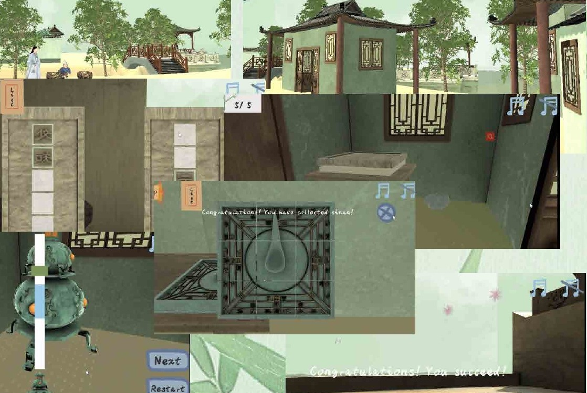

01 / EDUCATIONAL GAME · MSc THESIS · 2022
Journey to Cultural Relics of Ancient China
A 3D learning game that brings Chinese characters and the Four Great Inventions into an explorable cultural world.

- Context
- Individual MSc thesis · The University of Edinburgh
- Practice
- Game design, Unity development and user research
- Tools & methods
- Unity · Maya · Substance Painter
The question
How can exploring a cultural world make learning Chinese characters more engaging?
Created for learners unfamiliar with Chinese language and culture, the game combines an explorable environment with memory cards and invention-themed mini-games. Cultural knowledge becomes something to encounter through actions, rather than a separate wall of text.
01 / The approach
From objects to encounters
The Four Great Inventions — papermaking, printing, the compass and gunpowder — provide the cultural framework. Players explore a ship and a historical city, follow tasks and encounter language-learning activities along the way.
02 / The approach
An explorable learning loop
The documented flow moves from the opening story and ship exploration into dictionary and memory-card activities, then into city exploration and invention-related tasks. The Chinese-inspired 3D environment gives those learning activities a shared narrative setting.
03 / The approach
What changed after testing
The portfolio records feedback about mini-game difficulty, unclear rules, slow character movement and triggers in particular locations. The documented iteration adjusted difficulty and movement speed, revised introductory guidance and refined scene triggers. These are design iterations, rather than evidence of a quantified learning gain.
In motion
Watch the project.
The film loads from YouTube when you press play. You can also use the direct link above.

What this project contributes
Part of a continuing practice.
The project led to the 2024 publication listed on the Research page. Its strongest thread is the connection between cultural content, playable interaction and learning.
Read the related publication ↗